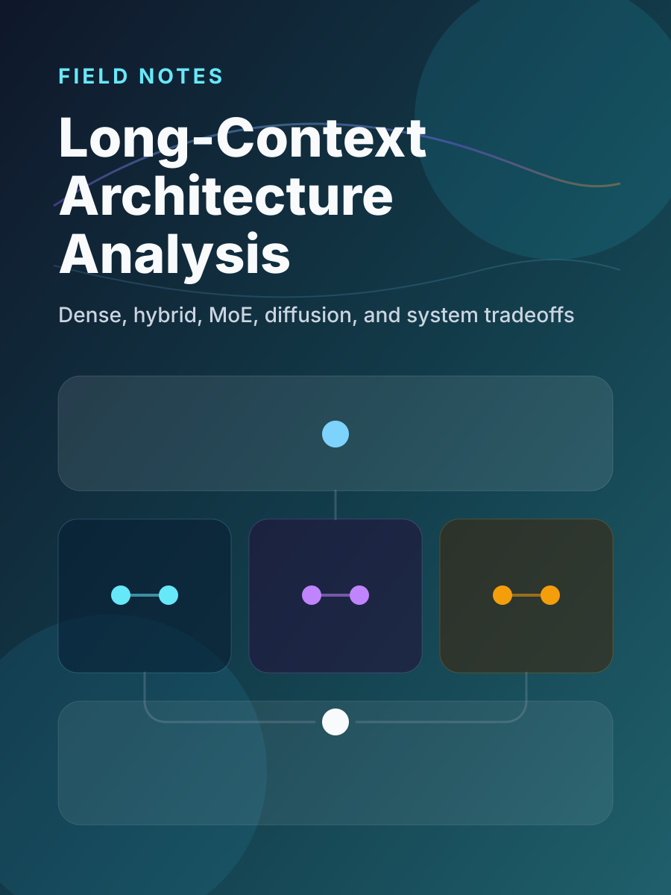

A Comparative Analysis of Large-Model Architectures for Long Context and Reasoning
When long-context reasoning becomes a deployment requirement, architecture choice stops being academic. This note compares the main model families through the lenses of capability, throughput, memory, and serving realism.
Architecture AnalysisReasoningInference SystemsModel Tradeoffs